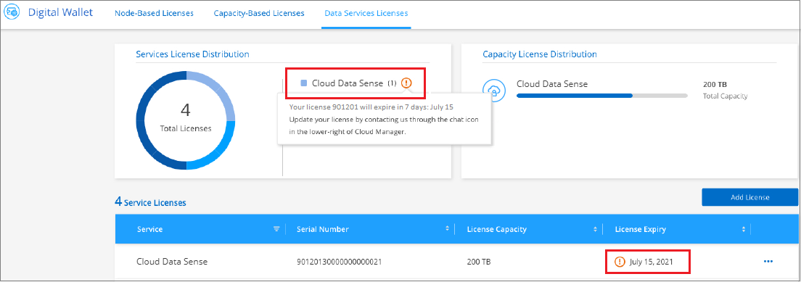

Demander de modifier un document
Demander de modifier un document Modifier sur GitHub
Modifier sur GitHub Guide des contributeurs
Guide des contributeursConfigurez les licences pour Cloud Data Sense
Contributeurs
Les 1 premiers To de données que Cloud Data Sense scanne dans un espace de travail BlueXP sont gratuits. Une licence BYOL de NetApp, ou un abonnement depuis le marché de votre fournisseur cloud, est nécessaire pour continuer l’analyse des données après ce point.
Quelques remarques avant de lire plus loin :
-
Si vous vous êtes déjà abonné à l’abonnement BlueXP Pay-as-Go (PAYGO) dans le marché de votre fournisseur de services cloud, vous êtes également automatiquement abonné à Cloud Data SENSE. Vous n’aurez pas besoin de vous abonner à nouveau.
-
La licence BYOL (Bring Your Own License) Cloud Data SENSE est une licence flottante que vous pouvez utiliser dans tous les environnements de travail et les sources de données de l’espace de travail que vous prévoyez d’analyser. Un abonnement actif s’affiche dans le porte-monnaie numérique.
Utiliser un abonnement Cloud Data Sense PAYGO
Les abonnements avec paiement à l’utilisation sur le marché de votre fournisseur cloud vous permettent d’obtenir une licence pour l’utilisation de systèmes Cloud Volumes ONTAP et de nombreux services de données cloud, comme ceux de Cloud Data Sense.
Vous pouvez vous abonner à tout moment et vous ne serez facturé que lorsque la quantité de données dépasse 1 To. Vous pouvez toujours voir la quantité totale de données analysées à partir du tableau de bord de détection de données. Et le bouton Subscribe Now permet de vous abonner facilement lorsque vous êtes prêt.

Ces étapes doivent être effectuées par un utilisateur qui a le rôle Account Admin.
-
Dans le coin supérieur droit de la console BlueXP, cliquez sur l’icône Paramètres et sélectionnez informations d’identification.

-
Recherchez les identifiants du profil d’instance AWS, de l’identité de service géré Azure ou de Google Project.
L’abonnement doit être ajouté au profil d’instance, à l’identité du service géré ou à Google Project. La charge ne fonctionnera pas autrement.
Si vous disposez déjà d’un abonnement BlueXP (indiqué ci-dessous pour AWS), vous êtes tous ensemble - il n’y a rien d’autre à faire.

-
Si vous n’avez pas encore d’abonnement, passez le curseur sur les informations d’identification, cliquez sur le menu d’action et cliquez sur associer l’abonnement.

-
Sélectionnez un abonnement existant et cliquez sur associé, ou cliquez sur Ajouter un abonnement et suivez les étapes.
La vidéo suivante montre comment associer un "AWS Marketplace" Abonnement à un abonnement AWS :
La vidéo suivante montre comment associer un "Azure Marketplace" Abonnement à un abonnement Azure :
La vidéo suivante montre comment associer un "Marketplace GCP" Abonnement à un abonnement GCP :
Utilisez une licence BYOL Cloud Data Sense
Modèle BYOL de 1, 2 ou 3 ans avec les licences Bring Your Own. La licence BYOL Cloud Data Sense est une licence flottante où la capacité totale est partagée entre tous de vos environnements de travail et de vos sources de données, facilitant ainsi le renouvellement et la licence initiale.
Si vous ne disposez pas de licence Cloud Data Sense, contactez-nous pour en acheter un :
-
Mailto:ng-contact-data-sense@netapp.com?subject=Licensing[Envoyer un e-mail pour acheter une licence].
-
Cliquez sur l’icône de chat dans le coin inférieur droit de BlueXP pour demander une licence.
Si vous disposez d’une licence non attribuée pour Cloud Volumes ONTAP de nœud que vous ne pourrez pas utiliser, vous pouvez la convertir en licence Cloud Data Sense avec la même équivalence en dollars et la même date d’expiration. "Cliquez ici pour plus d’informations".
Utilisez la page porte-monnaie numérique de BlueXP pour gérer les licences BYOL Cloud Data Sense. Vous pouvez ajouter de nouvelles licences et mettre à jour des licences existantes.
Procurez-vous votre fichier de licence Cloud Data Sense
Une fois que vous avez acheté votre licence Cloud Data Sense, vous activez la licence dans BlueXP en saisissant le numéro de série Cloud Data Sense et le compte NSS, ou en téléchargeant le fichier de licence NLF. Les étapes ci-dessous montrent comment obtenir le fichier de licence NLF si vous prévoyez d’utiliser cette méthode.
Si vous avez déployé Cloud Data SENSE sur un hôte d’un site sur site qui n’a pas accès à Internet, vous devez obtenir le fichier de licence d’un système connecté à Internet. L’activation de la licence à l’aide du numéro de série et du compte NSS n’est pas disponible pour les installations sur site sombre.
-
Connectez-vous au "Site de support NetApp" Et cliquez sur systèmes > licences logicielles.
-
Entrez le numéro de série de la licence Cloud Data Sense.

-
Sous License Key, cliquez sur Get NetApp License File.
-
Saisissez votre identifiant de compte BlueXP (il s’agit d’un identifiant de locataire sur le site d’assistance) et cliquez sur Submit pour télécharger le fichier de licence.

Vous pouvez trouver votre identifiant de compte BlueXP en sélectionnant le menu déroulant compte en haut de BlueXP, puis en cliquant sur gérer compte en regard de votre compte. Votre ID de compte se trouve dans l’onglet vue d’ensemble.
Ajoutez des licences BYOL Cloud Data Sense à votre compte
Après avoir acheté une licence Cloud Data Sense pour votre compte BlueXP, vous devez ajouter la licence à BlueXP pour utiliser le service Data Sense.
-
Dans le menu BlueXP, cliquez sur gouvernance > porte-monnaie numérique, puis sélectionnez l’onglet licences de services de données.
-
Cliquez sur Ajouter une licence.
-
Dans la boîte de dialogue Add License, entrez les informations de licence et cliquez sur Add License:
-
Si vous disposez du numéro de série de la licence Data Sense et connaissez votre compte NSS, sélectionnez l’option entrer le numéro de série et saisissez ces informations.
Si votre compte sur le site de support NetApp n’est pas disponible dans la liste déroulante, "Ajoutez le compte NSS à BlueXP".
-
Si vous disposez du fichier de licence de détection de données (requis lorsqu’il est installé sur un site sombre), sélectionnez l’option Télécharger le fichier de licence et suivez les invites pour joindre le fichier.

-
BlueXP ajoute la licence pour que votre service Cloud Data Sense soit actif.
Mise à jour d’une licence BYOL Cloud Data Sense
Si la durée de votre licence approche de la date d’expiration ou si votre capacité sous licence atteint la limite, vous serez informé dans Cloud Data Sense.

Cet état apparaît également dans le porte-monnaie numérique.

Vous pouvez mettre à jour votre licence Cloud Data Sense avant son expiration afin que vous puissiez accéder à vos données scannées sans interruption.
-
Cliquez sur l’icône de chat dans le coin inférieur droit de BlueXP pour demander une extension à votre terme ou une capacité supplémentaire à votre licence Cloud Data Sense pour le numéro de série particulier. Vous pouvez aussi envoyer un e-mail pour demander une mise à jour de votre licence.
Une fois que vous avez payé la licence et qu’elle est enregistrée sur le site de support NetApp, BlueXP met automatiquement à jour la licence dans Digital Wallet et et la page des licences des services de données reflétera la modification dans 5 à 10 minutes.
-
Si BlueXP ne peut pas mettre à jour automatiquement la licence (par exemple, lorsqu’elle est installée sur un site sombre), vous devrez charger manuellement le fichier de licence.
-
C’est possible Procurez-vous le fichier de licence sur le site de support NetApp.
-
Sur la page porte-monnaie numérique de l’onglet Data Services Licenses, cliquez sur
 Pour le numéro de série de service que vous mettez à jour, cliquez sur mettre à jour la licence.
Pour le numéro de série de service que vous mettez à jour, cliquez sur mettre à jour la licence.
-
Dans la page Update License, téléchargez le fichier de licence et cliquez sur Update License.
-
BlueXP met à jour la licence pour que votre service Cloud Data Sense reste actif.
Considérations relatives aux licences BYOL
Lors de l’utilisation d’une licence BYOL Cloud Data Sense, BlueXP affiche un avertissement dans l’interface utilisateur Data Sense et dans l’interface utilisateur de Digital Wallet lorsque la taille de toutes les données que vous numérisez approche de la limite de capacité ou presque de la date d’expiration de la licence. Vous recevez ces avertissements :
-
Lorsque la quantité de données que vous scannez atteint 80 % de la capacité sous licence, et une fois de plus que vous avez atteint la limite
-
30 jours avant l’expiration d’une licence, et encore une fois à l’expiration de celle-ci
Utilisez l’icône de chat en bas à droite de l’interface BlueXP pour renouveler votre licence lorsque vous voyez ces avertissements.
Si votre licence expire, Data Sense continue à fonctionner, mais l’accès aux tableaux de bord est bloqué afin que vous ne puissiez pas afficher les informations concernant vos données numérisées. Seule la page Configuration est disponible au cas où vous souhaitez réduire le nombre de volumes analysés afin d’augmenter votre capacité de stockage sous la limite de licence.
Une fois que vous renouvelez votre licence BYOL, BlueXP met automatiquement à jour la licence dans le porte-monnaie numérique et offre un accès complet à tous les tableaux de bord. Si BlueXP ne parvient pas à accéder au fichier de licence via la connexion Internet sécurisée (par exemple, lorsqu’il est installé sur un site sombre), vous pouvez obtenir le fichier vous-même et le télécharger manuellement vers BlueXP. Pour obtenir des instructions, reportez-vous à la section Comment mettre à jour une licence Cloud Data Sense.

|
Si le compte que vous utilisez possède à la fois une licence BYOL et un abonnement PAYGO, Data Sense ne pas passer à l’abonnement PAYGO lorsque la licence BYOL expire. Vous devez renouveler la licence BYOL. |